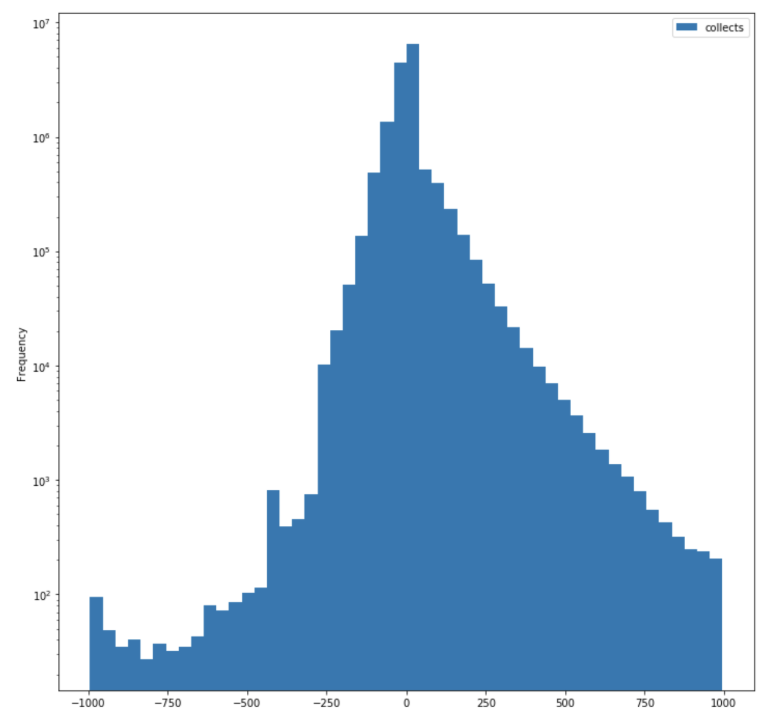

Tech Report
- Where is the data from?
To create our database we collected data from two databases. The data is of hand history of previous online texas holdem poker games. One of the datasets used was collected from Kaggle, and the other from Michael Maurer’s IRC Poker Database.
- How did you collect your data?
- The datasets were available online for download
- Is the source reputable?
- Both sources are accurate logs of online games, though we cannot be sure that all players are playing seriously, or even that all players are real players and not poker bots.
- The IRC database was created via a program called the Observer that was written by Michael Maurer and sat in on IRC poker channels and logged the details of every game it witnessed. This resulted in the collection of the more than 10 million complete hands of poker (from 1995-2001) that constitute the IRC Poker Database. In general, Internet Relay Chat (IRC) poker server games, while also free, are considered to have much higher skilled players involved than free online poker games today.
- How did you generate the sample? Is it comparably small or large? Is it representative or is it likely to exhibit some kind of sampling bias?
- We selected the first 10 rows of data from our database. This is comparably small to the database itself. It is likely to exhibit sampling bias, as the data points were not picked using a more randomized method.
- Are there any other considerations you took into account when collecting your data? This is open-ended based on your data; feel free to leave this blank. (Example: If it's user data, is it public/are they consenting to have their data used? Is the data potentially skewed in any direction?)
- How clean is the data? Does this data contain what you need in order to complete the project you proposed to do? (Each team will have to go about answering this question differently, but use the following questions as a guide. Graphs and tables are highly encouraged if they allow you to answer these questions more succinctly.)
- How many data points are there total? How many are there in each group you care about (e.g. if you are dividing your data into positive/negative examples, are they split evenly)? Do you think this is enough data to do what you hope to do?
We have around 2.5milliion data points.
- Are there missing values? Do these occur in fields that are important for your project's goals?
- IRC dataset does not contain amounts bet in each rounds
- Can only see what cards were drawn from one player’s viewpoint.
- Are there duplicates? Do these occur in fields that are important for your project's goals?
- No, there are no duplicates because each game is unique and the two datasets are from two different poker websites.
- How is the data distributed? Is it uniform or skewed? Are there outliers? What are the min/max values? (focus on the fields that are most relevant to your project goals)

- The data is skewed because of the fact that we only have data on hands that were revealed at the end of the game. Players with bad hands tend to fold before the showdown, so as you can see, there are more aces in our dataset, followed by kings, all the way down to twos, which have the smallest representation.

- Another field we looked at was net_gain. As you can see in the log scale histogram above, the most common net_gain was zero (the player folds early in the game), and the frequency of net_gains more steeply decreases on the negative side than the positive side. This makes sense because players are more likely to try to minimize loss per hand (but possibly losing a little bit each hand for several hands) and then win big on a few hands.
- Are there any data type issues (e.g. words in fields that were supposed to be numeric)? Where are these coming from? (E.g. a bug in your scraper? User input?) How will you fix them?
None.
- Do you need to throw any data away? What data? Why? Any reason this might affect the analyses you are able to run or the conclusions you are able to draw?
- At this stage, we are not sure whether we will need to throw any data away. However, when we do more analysis, we might find that if a player quits or gets kicked out during a game, then the game should count as an anomaly, in which case we will throw those games away.
- Additionally, as we learn more about play patterns, we might find that players at low stakes tables play too erratically, in which case we might exclude some low stakes games as well.
- In any case, since we have such a large amount of data, we don’t think that throwing these data away will have a significant effect on our analysis.
- Summarize any challenges or observations you have made since collecting your data. Then, discuss your next steps and how your data collection has impacted the type of analysis you will perform. (approximately 3-5 sentences)
- One important observation as we collected data is how little information we have regarding each player’s hand. We only know the hands that made it to the end of the game and infrequently the ones that the players voluntarily showed. This will affect the type of hypothesis testing we conduct. We are, however, overall happy with the quantity and quality of the data we collected.